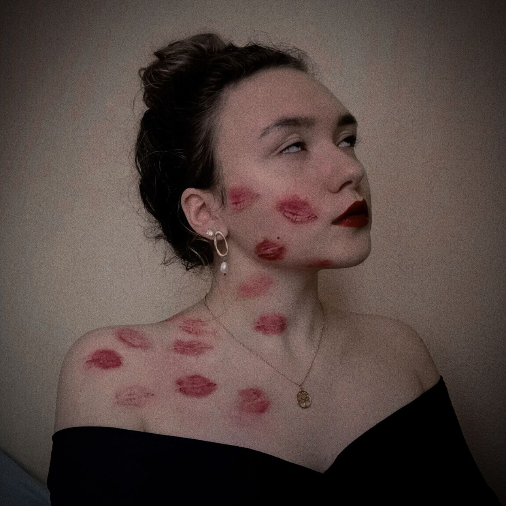
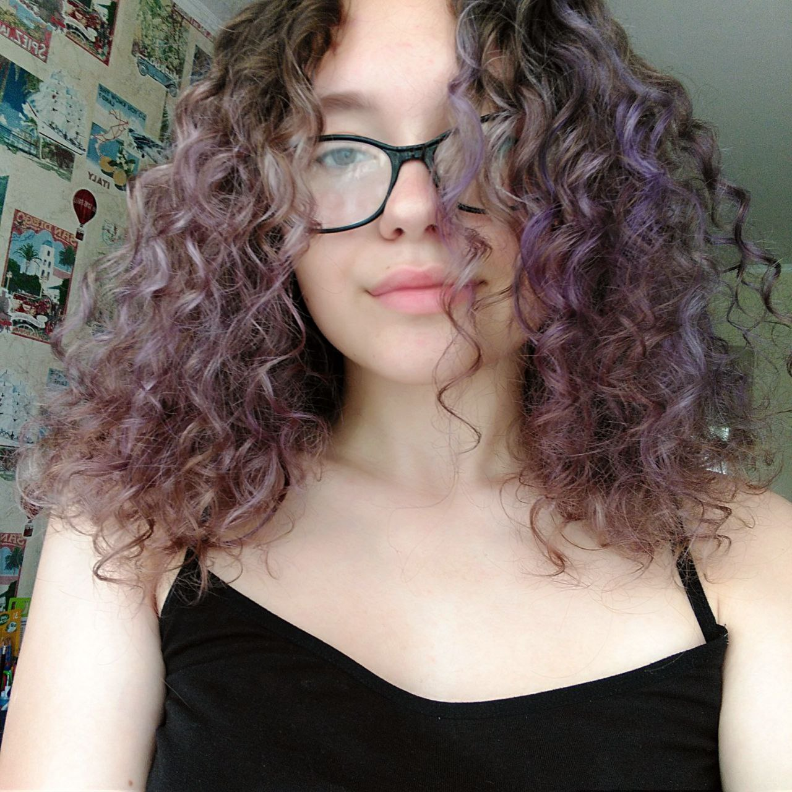
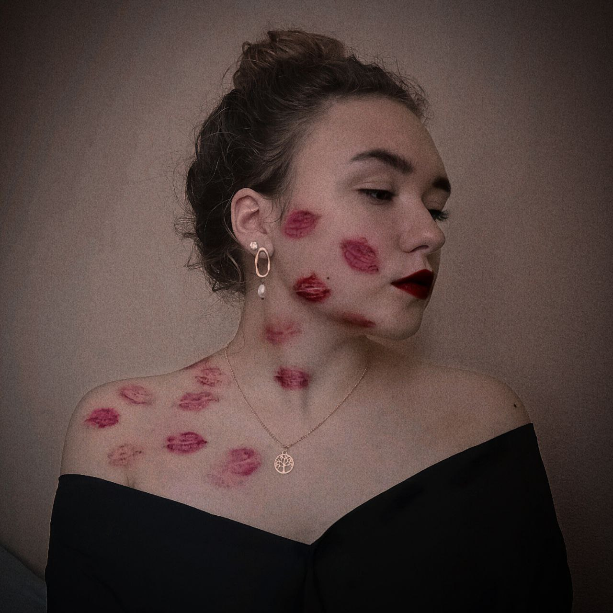
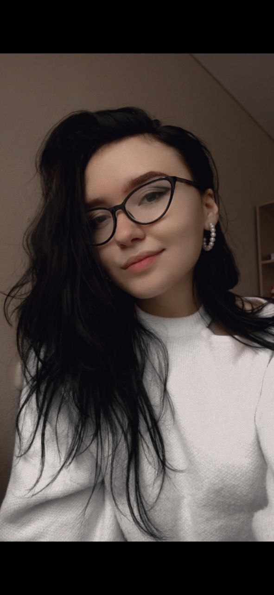
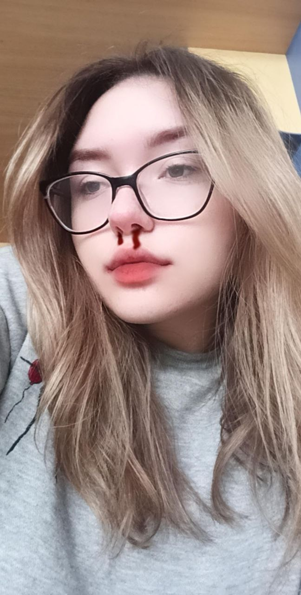
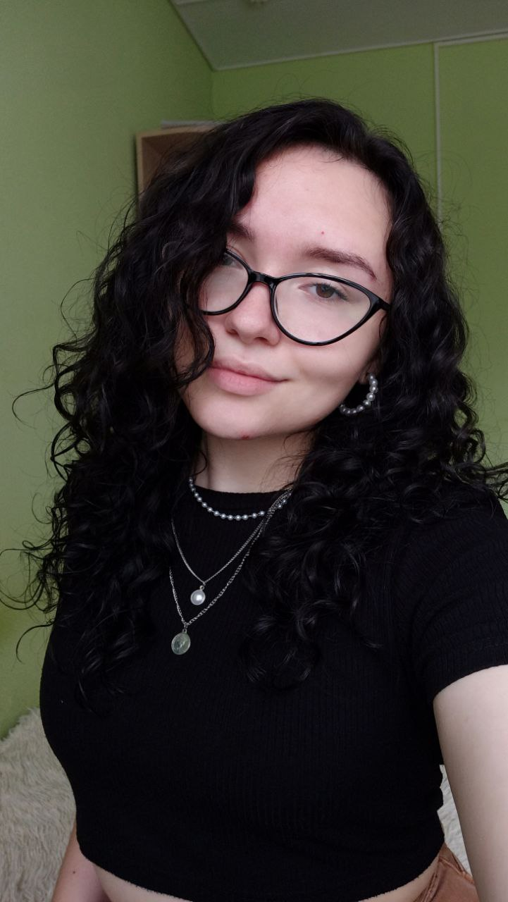
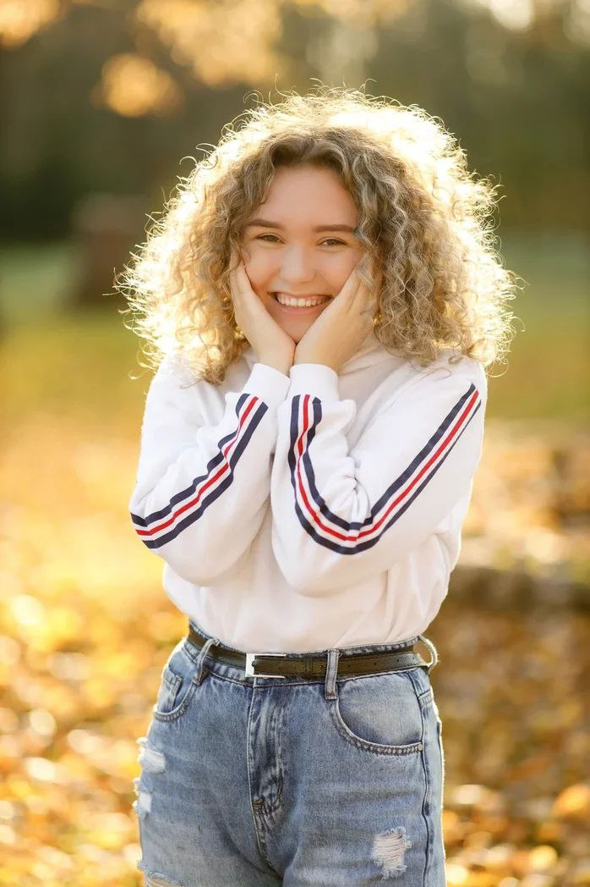

О Настюшке
Филон Анастасия Алексеевна ака Анастэйша Фил
ФИО: Филон Анастасия Алексеевна
Возраст: 18
Знак зодиака: Овен
Любимый цвет: Голубой, Фиолетовый
Любимый цветок: Лилии, Пионы
Любимая музыка: Рок, Рэп, Альтернатива

До 6 класса Настя училась в школе №1, затем перевелась и закончила Гимназию Ошмянского района.
Осилила только 2 года из 4 в музыкальной школе, обучаясь игре на домбре.
Ошмяны маленький город, но, если и появлялось что-то творческое, Настя всегда пробовала: танцы, рисование, плетение бисером, вышивание и другие различные занятия в кружке «Умелые ручки».
До сих пор старается поддерживать свою творческую часть: вяжет, плетёт фенечки, рисует, выкладывает картины алмазами.



Ещё в детстве Настя хотела покрасить волосы в красный или рыжий.
Выросла и смогла. Только сначала блонд, потом синий, потом розовый, опять блонд, затем лавандовый, жёлтый, зелёный, снова блонд, неожиданно в сплит, а теперь в чёрный.
Волосы Настюшки Фил кучерявые от природы, у неё все в семье кучерявые: папа, мама, она и младший брат.



